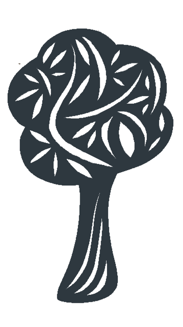

<!DOCTYPE html>
<html lang="English"></html>

<link rel="stylesheet" href="styles.css" />
<script src="javascript.js"></script>

<html>
  <head>
    <title>CV Minna Boman</title>

    <div class="header">
      
      <h1>MINNA BOMAN</h1>
    </div>

    <nav id="Navigointi">
      <ul>
        <li><a href="index.html">HOME</a></li>
        <li><a href="experience.html">WORK EXPERIENCE</a></li>
        <li><a href="education.html">EDUCATION</a></li>
        <li><a href="miscellaneous.html">MISCELLANEOUS</a></li>
        <li><a href="contact.html">CONTACT</a></li>
      </ul>
    </nav>
  </head>

  <body>
    <section>
      <div class="Container">
        <h2 id="Experience">WORK EXPERIENCE</h2>
        <button onclick="myFunction2()">+ / -</button>
        <div id="myDiv1">
          <h4>
            Project manager
            <a
              href="https://www.palava.global/"
              title="Palava Global"
              target="_blank"
              ><br />
              Palava Global</a
            >
          </h4>
          <small>12/2019 - present</small>
          <p>
            As a project manager in an internationalization company, I have the
            possibility to participate in amazingly interesting and varying
            customer projects. We help mainly small and middle-sized companies
            in their efforts to do business globally - in a different way than
            it usually is done. In addition to this, I even have the
            responsibility to drive internal projects within process and project
            management, economics and with a touch of HR.
          </p>

          <h4>
            Project coordinator/project manager (medical)
            <a href="https://www.sgs.fi/" title="SGS Fimko" target="_blank"
              ><br />SGS Fimko</a
            >
          </h4>
          <small>6/2019 - 11/2019</small>
          <p>
            As a medical product coordinator/project manager, I was
            administrating the Notified Body business for the Finnish auditing
            team. In addition, I managed the customer projects and kept the
            wheels rolling by keeping the different threads in my hands. My
            mission was to build a well-working process in the business. I was
            part of the Finnish Notified Body team and worked even in close
            contact with Asian affiliates.
          </p>

          <h4>
            Local Tray coordinator
            <a
              href="https://www.molnlycke.fi/"
              title="Mölnlycke"
              target="_blank"
              ><br />Mölnlycke Health Care</a
            >
          </h4>
          <small>3/2006 - 6/2019</small>
          <p>
            Customized procedure trays are assembled to contain all the
            single-use components required for a certain surgical intervention
            and are always produced to meet the needs of a specific customer.<br />
            <br />
            As a local tray coordinator, I was responsible for the custom-made
            procedure packs daily routine work in Finland, ie. planning and
            helping the account managers to plan the contents of the different
            sets, keeping the contents of the sets correct, securing the
            availability of the sets and participating in the tender process and
            planning the business strategy for the sets in Finland. In addition,
            I participated in implementing global initiatives regarding
            components, regulations, and marketing material in the Finnish
            market. By creating processes and tools for the business and
            supporting the sales team, I strongly contributed to the success
            story of Mölnlycke custom-made procedure packs in Finland, from the
            very beginning to the high single-digit million business it is now.
            I had an international collaboration with the factories and the
            Nordic organization on a daily basis. My excellent organizational
            skills and a structured way of working continuously supported the
            whole team in reaching the goals.
          </p>

          <h4>
            Product manager, surgical products
            <a
              href="https://www.molnlycke.fi/"
              title="Mölnlycke"
              target="_blank"
              ><br />Mölnlycke Health Care</a
            >
          </h4>
          <small>1/2005 - 3/2006</small>
          <p>
            As a product manager for surgical products, I was responsible for
            planning, executing and monitoring different marketing activities
            based on Nordic and local plans. I was also responsible for the
            Advertising & Promotional budget for surgical products in Finland. I
            have promoted the sales growth with successful product launches and
            implementing the marketing activities successfully to the local
            market. Working closely as a team with the account managers has
            delivered successful sales results. The account managers have been
            extremely satisfied with the fast response time I have delivered in
            the sales support work.
          </p>

          <h4>
            Sales and marketing coordinator, Surgical
            <a
              href="https://www.molnlycke.fi/"
              title="Mölnlycke"
              target="_blank"
              ><br />Mölnlycke Health Care</a
            >
          </h4>
          <small>8/2004 - 1/2005</small>
          <p>
            As a sales & marketing coordinator for the surgical products, I was
            responsible for direct marketing campaigns, media connections as
            well as arranging exhibitions and events in the hospitals. In
            addition, I updated the Finnish web pages, took care of customer
            loyalty actions and education materials and was responsible for
            planning and launching marketing campaigns on a local level. I
            succeeded in arranging customer events that received excellent
            feedback from the participants. I worked in close co-operation with
            the sales persons and acted as sales support for the team.
          </p>

          <h4>
            Sales and marketing coordinator, Wound care
            <a
              href="https://www.molnlycke.fi/"
              title="Mölnlycke"
              target="_blank"
              ><br />Mölnlycke Health Care</a
            >
          </h4>
          <small>7/2001 - 8/2004</small>
          <p>
            I was responsible for the wide marketing material assortment as well
            as planning and executing direct marketing campaigns for the wound
            care professionals. In addition, I arranged exhibitions and events
            in the local market as part of the Nordic marketing team. Giving the
            best sales support to the product specialists I helped the team to
            reach the sales goals. I worked in close co-operation with the
            Nordic organization and the sales team in Finland. My ability to
            keep the deadlines in the marketing projects resulted in successful
            launches.
          </p>

          <h4>
            Marketing assistant (DJ Esko)
            <a
              href="https://fi.wikipedia.org/wiki/Radiolinja"
              title="Radiolinja"
              target="_blank"
              ><br />Radiolinja (nowadays Elisa)</a
            >
          </h4>
          <small>11/2000- 6/2001</small>
          <p>
            I was part of the marketing team helping to coordinate and execute
            different marketing-related activities and campaigns. In addition, I
            performed project management follow-up for the marketing projects.
          </p>

          <h4>
            Project coordinator
            <a
              href="https://fi.wikipedia.org/wiki/Radiolinja"
              title="Radiolinja"
              target="_blank"
              ><br />Radiolinja (nowadays Elisa)</a
            >
          </h4>
          <small>2/1999- 11/2000</small>
          <p>
            I acted as an assistant in projects that covered the whole company.
            I was responsible for coordinating business critical Year 2000- and
            Modeling the processes -projects. I succeeded in creating a model
            for the company’s project portfolio follow-up and with that
            supported the development of the project work in the organization. I
            worked in close co-operation with the project managers and the
            Product council. My well-organized and precise ways of working were
            appreciated in the organization.
          </p>
        </div>
      </div>
    </section>

    <footer id="main-footer">
      <p>
        Copyright &copy; <br />
        2020 Minna Boman
      </p>
      <p>
        Paper Arts Copyright &copy; <br />
        2020 Johanna Länsivierto
      </p>
    </footer>
  </body>
</html>
